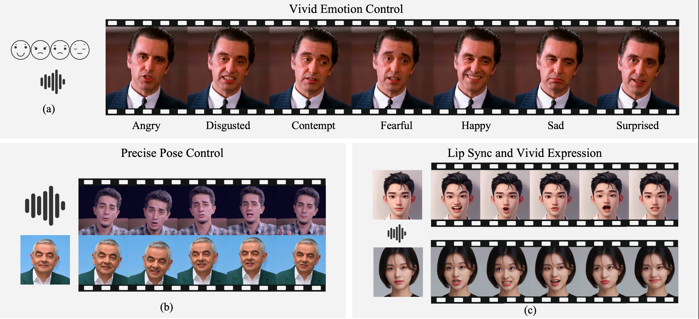

Abstract:
Recent diffusion-based talking face generation models have demonstrated impressive potential in synthesizing videos that accurately match a speech audio clip with
a given reference identity. However, existing approaches still encounter significant challenges due to uncontrollable factors, such as inaccurate lip-sync,
inappropriate head posture and the lack of fine-grained control over facial expressions.
In order to introduce more face-guided conditions beyond speech audio clips, a novel two-stage training framework Playmate
is proposed to generate more lifelike facial expressions and talking faces.
In the first stage, we introduce a decoupled implicit 3D representation along with a meticulously designed motion-decoupled module
to facilitate more accurate attribute disentanglement and generate expressive talking videos directly from audio cues. Then, in the second stage,
we introduce an emotion-control module to encode emotion control information into the latent space, enabling fine-grained control
over emotions and thereby achieving the ability to generate talking videos with desired emotion. Extensive experiments demonstrate that Playmate outperforms
existing state-of-the-art methods in terms of video quality and lip-synchronization, and improves flexibility in controlling emotion and head pose.

Playmate can generate lifelike talking faces for arbitrary identity, guided by a speech audio clip and a variety of
optional control conditions. (a) shows the generation results under different emotional conditions using the same audio clip.
The top row in (b) shows the driving images, while the bottom row shows the generated results. The poses in the generated
results are controlled by the driving images, and the lip movements are guided by the driving audio. (c) demonstrates highly
accurate lip synchronization and vivid, rich expressions across different style images.
Overview of Playmate
Playmate is a two-stage training framework that leverages a 3D-Implicit Space Guided
Diffusion Model to generate lifelike talking faces. In the first stage, Playmate utilizes a motion-decoupled module to enhance attribute
disentanglement accuracy and trains a diffusion transformer to generate motion sequences directly from audio cues. In the second
stage, we use an emotion-control module to encode emotion control information into the latent space, enabling fine-grained control over
emotions, thereby improving flexibility in controlling emotion and head pose
Disentanglement between Head Pose and Facial Dynamics
From top to bottom: the raw generated sequence, applying generated poses with fixed initial facial dynamics, and applying generated facial dynamics with fixed initial head pose and pre-defined spinning poses.
Audio Driven Examples
Audio Driven (Talking)
Audio Driven (Sing)
Emotion Controllability
Angry
Disgusted
Contempt
Fear
Happy
Sad
Surprised
Emotion Controllability Comparsion (Male)
Angry
Disgusted
Contempt
Fear
Happy
Sad
Surprised
Emotion Controllability Comparsion (Female)
Angry
Disgusted
Contempt
Fear
Happy
Sad
Surprised
Method Comparsion (Audio Driven)
Playmate
Hallo
Hallo2
JoyVASA
MEMO
Sonic
Pose Control Capability
3DoF Pose Control Visualization
In the two videos mentioned above, the right video is generated through pose-driven animation technology (Playmate) based on the human body movements captured from the character in the left video
Pose and Facial Expression Decoupling Effect
The first row displays the reference image, the first column shows the pose control mode, and the remaining cells present the generated results. The pose in the second row is controlled by the video on the left, the pose in the third row consists of pre-defined spinning poses, and the pose in the last row is a fixed pose.
Effect Comparison between Playmate with Sonic
In each of the videos above, the left video is generated by Playmate, while the right one is generated by Sonic.
Acknowledgements:
The webpage template is borrowed from Takin-ADA. We thank the authors for their codebase.